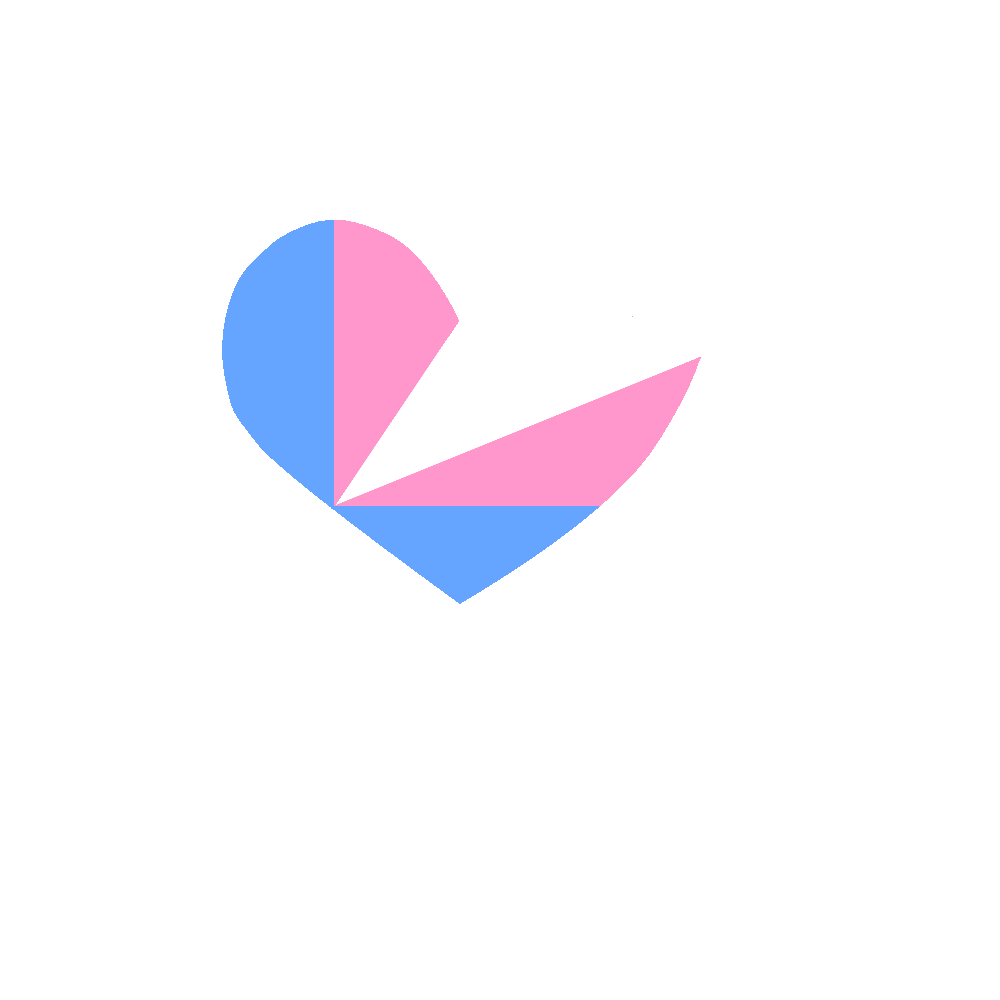

Hola Princesita tu Principe esta intentando reconquistarte a su manera de ser, enserio te ama mucho y te quiere
en su vida y esta hablando en tercera persona haha.
Te quiero muchisimo has logardo conquistar mi corazon, hacer que desee pasar el resto de mi vida contigo, que esto
sea para siempre, y eso pienso cada vez que me acuesto y deseo que tu estes
conmigo acompañandome, cuando tenemos salidas ya que tu siempre las haces especiales.
Pero hoy, en este momento, quiero decirte que te amo más que nunca.
Te extraño en cada segundo del día, y no puedo evitar pensar en todos los buenos momentos que pasamos juntos.
Recuerdo el día que te conocí de muy pequeño y tuve desde ese momento la intencion de ser tu pareja
y formar contigo la familia que deseo. Y recuerdo mas aun cómo llegue a sentír que el mundo se detenía por un
momento mientras nuestros ojos se encontraban en esas cataratas en Sogay cuando sin darnos cuenta sentimos que eramos
el uno para el otro.
Desde ese momento, supe que eras la persona más especial que había conocido, y aún lo creo.
No hay nada que desee más que pasar el resto de mi vida a tu lado.
Sé que puedo hacerte feliz, y estoy dispuesto a hacer todo lo necesario para demostrártelo.
Prometo ser un compañero amoroso, fiel y comprensivo,
y nunca más permitir que las inseguridades y los errores pasados se interpongan en nuestro camino.
Espero que puedas perdonarme y darme la oportunidad de demostrarte que soy la persona adecuada para ti.
Si hay algo que pueda hacer para ayudar a que esto suceda, por favor, dímelo.
Estoy dispuesto a hacer lo que sea necesario para volver a ganar tu amor y tu confianza.
El tiempo ha pasado volando desde que comenzamos esta aventura juntos,
y ahora, a solo dos meses de nuestro segundo aniversario,
no puedo dejar de pensar en ese hueco que siente mi corazon por lo ultimo que sucedio y no quiero dejar las cosas asi.
Cuando pienso en los próximos dos meses y en todo lo que vendrá después,
mi corazón late con emoción y al mismo tiempo, con la esperanza de que podamos reconciliarnos.
Sé que hemos pasado por momentos difíciles, pero confío en que podemos superarlos juntos.
Sueño con un futuro en el que volvamos a ser esos dos enamorados que nos mirábamos con ojos llenos de ternura,
que reíamos a carcajadas y que nos apoyábamos mutuamente sin importar qué.
Sé que podemos volver a ser esa pareja llena de amor y complicidad.
Te amo más de lo que las palabras pueden expresar, porotita.
Y estoy dispuesto a hacer lo que sea necesario para recuperar tu confianza y amor.
Este soy yo tu me conoces mas que nadie aveces no soy tan expresivo o hablo de esta manera, porque siento
que no lo podria decir con palabras pero si dejandolo a mi forma de ser con una carta en la nube donde me siento yo mismo.
